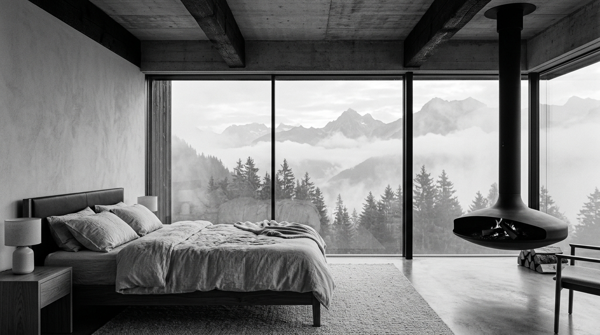

02.A
SUÍTE PANORÂMICA
Despertar no Mar de Nuvens
Vidros térmicos de quatro metros de vão proporcionam a sensação de flutuar sobre o vale. Cama king sob lençóis de linho belga lavado a pedra, piso aquecido radiante e lareira de aço carbono suspensa aos pés da cama.
Lençóis de linho 100% puro • Lareira suspensa a lenha • Piso térmico